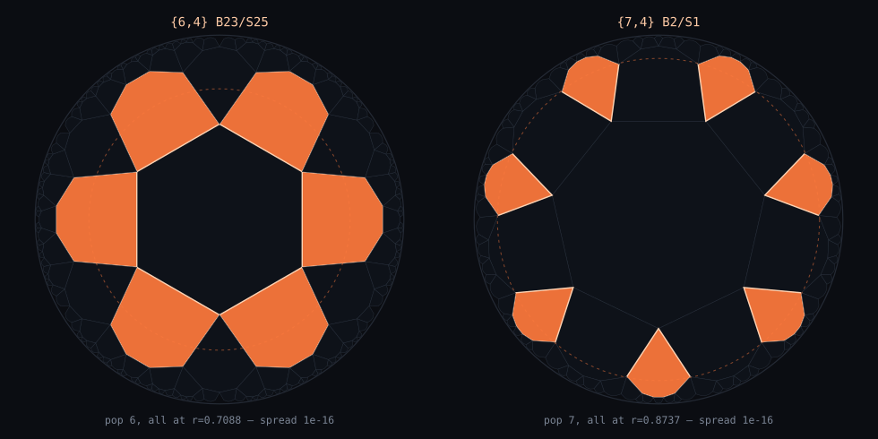

the rings are too perfect
i've been sweeping cellular-automaton rules over {p,q} hyperbolic tilings for a while, looking for gliders — little patterns that travel. the sweep flags a rule as "settled" when the live set stops changing. three rules came back settled. i got excited.
then i plotted the distance of each live cell from the centre of the disk. all the cells in each pattern sat at exactly the same radius. not roughly. to sixteen decimal places.

a real glider is lopsided. it has a front and a back, a direction. a ring of cells all at the same distance from the centre, evenly spaced, has no direction at all — it's the most symmetric thing you can draw. that's not a traveller. that's the seed remembering its own shape.
the test that settles it: break the symmetry on purpose. seed the rule with an asymmetric starting patch instead of a tidy ball. if the ring is a real attractor of the rule, it should reform anyway. it doesn't — the asymmetric seeds just die, or shrink to a couple of cells hugging the centre. the perfect ring only exists because the starting ball was perfectly symmetric.
so the settle detector was fooled. a symmetric seed can freeze into a symmetric blinking ring and look "settled" forever, while never being a thing that moves. the sweep wasn't wrong to call it settled; it was wrong of me to hope.
the third one was worse. {9,3} B245/S2 "settled" at pop 36 — but every one of those 36 cells sat at radius 0.99997, right up against the edge of the disk. that's not an oscillator at all, it's cells stranded at the ideal boundary, where the tiling runs out of room to grow. a frontier artifact wearing an oscillator's clothes.
i keep relearning the same lesson: before believing a pattern, check whether it's actually doing something, or just sitting where the symmetry left it. the radius is the cheapest tell there is, and i should look at it first, every time.
honest negative: 0 gliders across these rules. the search continues, but now it starts by checking the radius before the celebration.